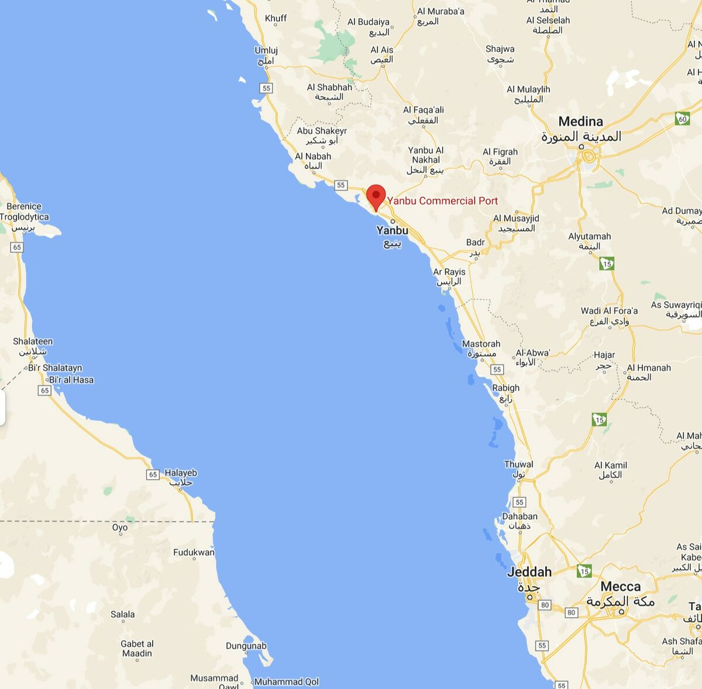

Contact Us
If you would like to learn more about Yanbu Industrial City, its attractions, or its heritage, please fill out the form below.
How to Reach Yanbu
Yanbu is located on the western coast of Saudi Arabia along the Red Sea. The city can be reached by air through Prince Abdul Mohsin Bin Abdulaziz International Airport.
Yanbu is also connected by major highways to Madinah and Jeddah, making it easily accessible by car or public transportation.
